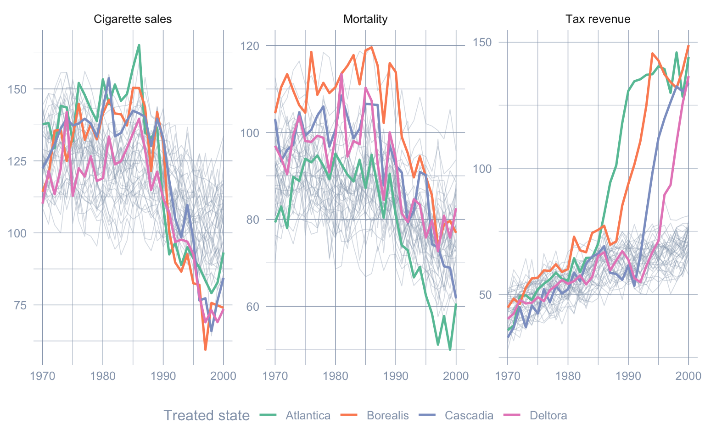
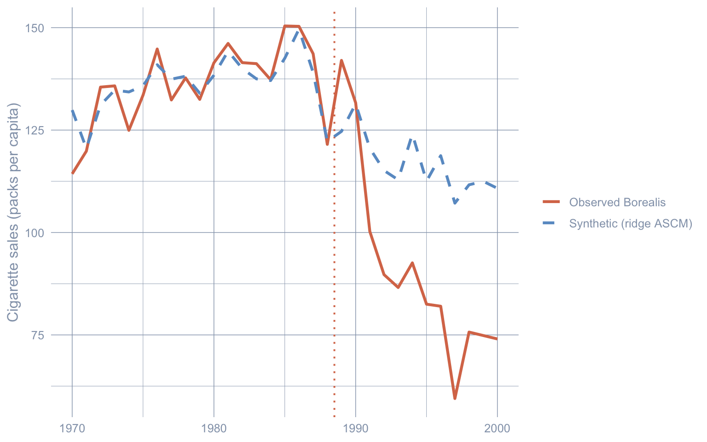
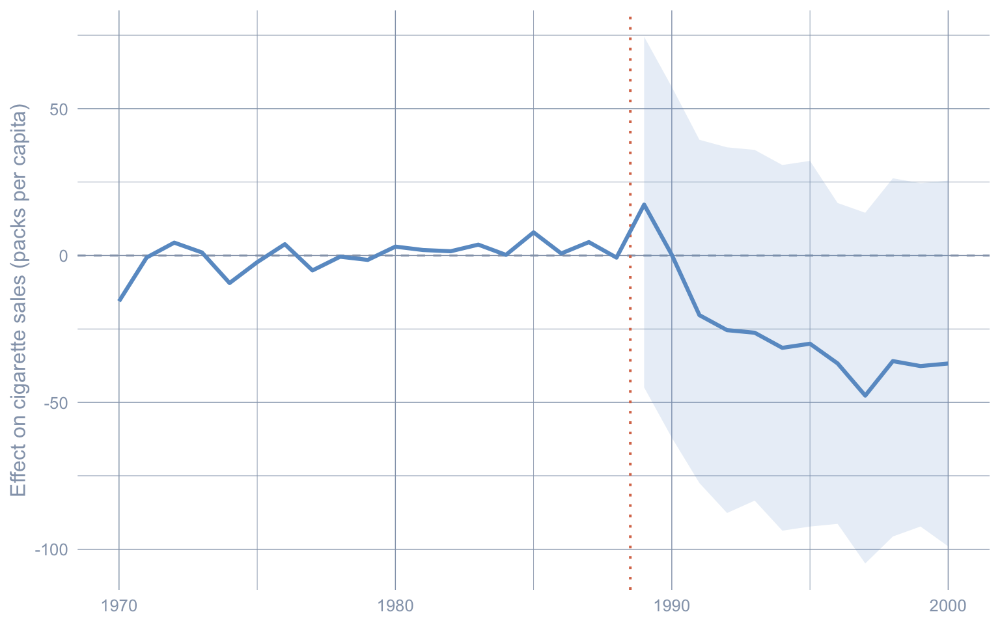
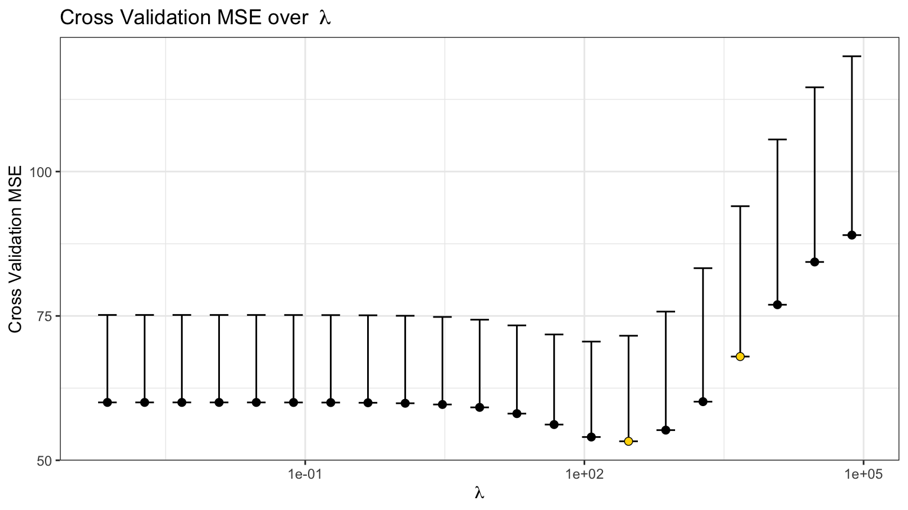
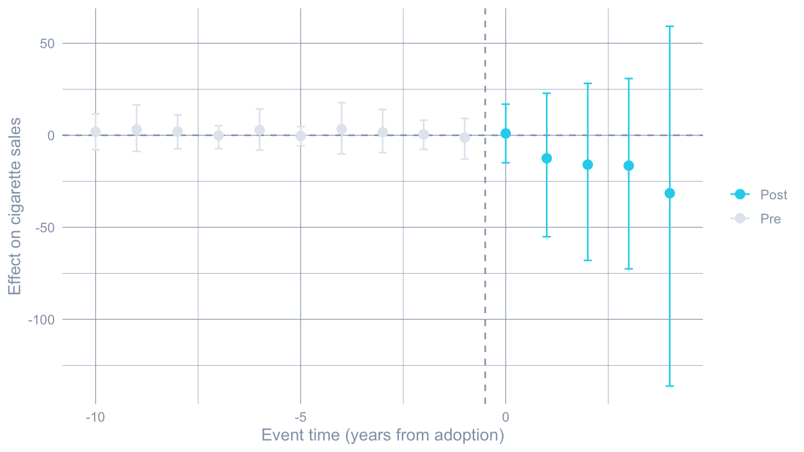
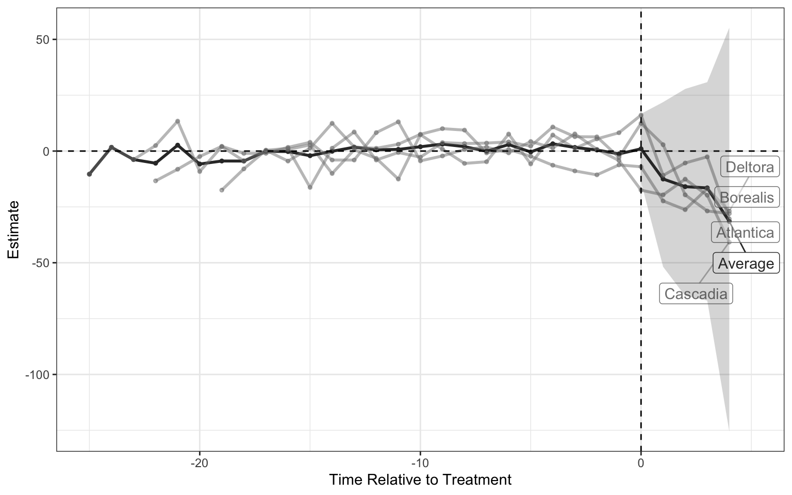
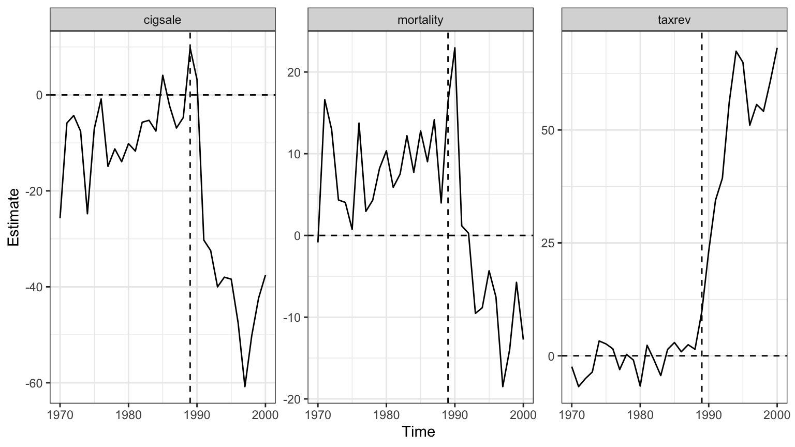

flowchart LR
A["Donor pool<br/>(untreated units)"] --> B["SCM weights w<br/>(simplex; may fit poorly)"]
A --> C["Outcome model m<br/>(ridge on pre-periods)"]
B --> E["Bias-corrected<br/>counterfactual Y1(0)"]
C --> D["Bias correction<br/>m(X1) - sum w*m(Xj)"]
D --> E
E --> F["ATT = Y1 - Y1(0)"]
style A fill:#6a9bcc,stroke:#cbd5e0,color:#fff
style E fill:#6a9bcc,stroke:#cbd5e0,color:#fff
style F fill:#6a9bcc,stroke:#cbd5e0,color:#fff
5 Augmented Synthetic Control
Chapter 4 fit classical synthetic control to California and got lucky: synthetic California tracked the real series almost perfectly through 1988, so the simplex weights had nothing left to explain. That near-perfect pre-period fit is what licenses the post-period gap as a causal effect. But the simplex is a strait jacket — weights must be non-negative and sum to one, so the synthetic unit can only ever be an interpolation of the donors. When the treated unit sits outside the convex hull of the donor pool, no convex combination reproduces its pre-period, the fit is poor, and the estimate inherits that bias.
The Augmented Synthetic Control Method (ASCM) of Ben-Michael et al. (2021) keeps the synthetic-control weights but adds an outcome model — a ridge regression — that estimates the residual imbalance and subtracts it off, exactly the way augmented inverse-propensity weighting de-biases a misspecified weighting estimator. This chapter works through the three faces of the augsynth package on a purpose-built simulated panel engineered to have the bad pre-treatment fit that Proposition 99 never suffered.
5.1 Learning objectives
- Fit ASCM for a single treated unit and read the ridge bias correction \(\widehat{Y_{1t}(0)} = \sum_j \widehat{w}_j Y_{jt} + \big(\widehat{m}_t(X_1) - \sum_j \widehat{w}_j \widehat{m}_t(X_j)\big)\), recovering \(\widehat{\tau}_{\text{ASCM}}\) and contrasting it with the simplex estimator \(\widehat{\tau}_{\text{SCM}}\) of chapter 4.
- Diagnose poor pre-treatment fit through the \(L_2\) imbalance and show that ridge augmentation lowers it — the chapter’s central demonstration that the outcome model earns its keep precisely when the donor convex hull cannot reach the treated unit.
- Extend to staggered adoption with
multisynth, reporting the overall ATT, per-cohort effects, and a per-lead event study \(\widehat{\tau}_{\text{ASCM}}(e)\) — the augmented-control analogue of the Callaway-Sant’Anna machinery in chapter 9. - Fit several outcomes jointly with
augsynth_multiout, finding one set of donor weights that balances all outcomes’ pre-periods, and compare the joint per-outcome ATTs with separate single-outcome fits. - Quantify uncertainty with conformal, jackknife+, and wild-bootstrap inference, and state when each applies.
5.2 The augmentation idea
Classical synthetic control builds the counterfactual as a weighted average of donors, \(\widehat{Y_{1t}(0)} = \sum_j \widehat{w}_j\, Y_{jt}\), with the weights \(\widehat{w}\) chosen to match the treated unit’s pre-period. When a good match exists, the pre-period imbalance \(X_1 - X_0\widehat{w}\) is essentially zero and we trust the post-period gap. When no convex combination matches — because the treated unit is an extrapolation of the donor cloud rather than an interpolation — a stubborn imbalance remains and biases the estimate.
ASCM keeps \(\widehat{w}\) but adds a correction. Fit an outcome model \(\widehat{m}_t(\cdot)\) — augsynth uses ridge regression — that predicts the post-period outcome from the pre-period predictors, and form
\[ \widehat{Y_{1t}(0)} \;=\; \underbrace{\sum_j \widehat{w}_j\, Y_{jt}}_{\text{SCM term}} \;+\; \underbrace{\Big(\widehat{m}_t(X_1) - \sum_j \widehat{w}_j\, \widehat{m}_t(X_j)\Big)}_{\text{bias correction}}. \]
The correction is the outcome model’s estimate of the gap that the SCM weights failed to close. If balance is perfect (\(X_1 = \sum_j \widehat{w}_j X_j\)) the correction vanishes and ASCM equals SCM; the worse the balance, the more work the correction does. Setting the outcome model to nothing (progfunc = "none") recovers classical synthetic control exactly, which makes it the natural baseline to measure the augmentation against.
5.3 The estimator
The ridge outcome model regresses pre-period outcomes on the donor outcomes with an \(L_2\) penalty \(\lambda_{\text{ridge}}\) chosen by cross-validation (we subscript it to keep it distinct from the factor loadings \(\lambda_i\) the book uses elsewhere); the penalty shrinks the correction toward zero, so ASCM never strays far from the SCM fit unless the data demand it. Two knobs matter throughout:
progfuncselects the outcome model:"none"(plain SCM — no correction),"ridge"(the default ASCM), or others such as"en"(elastic net). Ridge is the workhorse and the only one with a closed-form bias estimate.scmtoggles whether SCM weights are used at all. Withscm = TRUEthe weights come from the synthetic-control quadratic program and the outcome model only de-biases; withscm = FALSEthe donors enter with equal weight and the outcome model does everything.
Unlike the simplex, the ridge-augmented weights are not constrained to be non-negative — the correction can place small negative weights on donors, allowing the controlled extrapolation that a convex combination forbids. That is the source of both ASCM’s power and its risk.
Identification. ASCM recovers the ATT under one assumption: the ridge-augmented model correctly imputes the treated unit’s untreated path \(\widehat{Y_{1t}(0)}\) from the donors — the SCM weights plus the outcome-model correction capture every systematic pre-period difference, leaving only noise. This is weaker than the classical-SCM requirement that the treated unit lie inside the donor convex hull, but it is not free: if the residual imbalance reflects a confounder the ridge model cannot see, the correction is biased too. Everything in this chapter is conditional on it.
5.4 Setup and data
Packages. tidyverse covers wrangling and plotting. augsynth provides all three estimators — augsynth() for a single treated unit, multisynth() for staggered adoption, and augsynth_multiout() for several outcomes. haven reads the simulated panel from its labelled Stata file. R/table_helpers.R supplies gt_pretty().
Code: Load packages, source table helpers, and set the ggplot theme.
library(tidyverse)
library(augsynth)
library(haven)
source("R/table_helpers.R")
# multisynth's wild-bootstrap standard errors consume RNG, so the seed is load
# bearing here (unlike the deterministic solvers in chapter 4).
set.seed(42)
knitr::opts_chunk$set(dev.args = list(bg = "transparent"))
theme_set(
theme_minimal(base_size = 12) +
theme(
plot.background = element_rect(fill = "transparent", color = NA),
panel.background = element_rect(fill = "transparent", color = NA),
panel.grid.major = element_line(color = "#94a3b8", linewidth = 0.25),
panel.grid.minor = element_line(color = "#94a3b8", linewidth = 0.15),
text = element_text(color = "#94a3b8"),
axis.text = element_text(color = "#94a3b8")
)
)Dataset. Proposition 99 was too kind to make the point, so this chapter uses a simulated tobacco-control panel built by R/simulate_tobacco_panel.R and shipped as the labelled Stata file data/tobacco_sim.dta. Forty fictional states are observed annually from 1970 to 2000. Thirty-six are never-treated donors; four — Atlantica, Borealis, Cascadia, and Deltora — enact an anti-smoking program at staggered dates (1986, 1989, 1992, 1995). Three outcomes are recorded: cigarette sales, smoking-related mortality, and tobacco tax revenue.
The data-generating process is rigged to defeat the simplex. Each outcome follows a two-factor model; the donors’ factor loadings sit inside the unit square, but the four treated states’ loadings are pushed outside the convex hull of the donor loadings. No convex combination of donors can reproduce the treated factor path, so classical synthetic control is guaranteed a poor pre-period fit — the exact condition under which ridge augmentation is supposed to help.
Code: Read the labelled Stata file and prepare the modelling columns.
tobacco_raw <- read_dta("data/tobacco_sim.dta")
tobacco <- tobacco_raw |>
mutate(
adoption_year = if_else(adoption_year >= 9999, Inf, as.numeric(adoption_year)),
treated = as.integer(treated), # static: ever adopts
trt = as.integer(trt) # time-varying: program active this year
)The labelled .dta carries a human-readable description for every column, which survives the round-trip into R and which Stata users will see in their variable browser.
Code: Pull the variable labels out of the labelled data frame.
tibble(
Variable = names(labelled::var_label(tobacco_raw)),
Label = unlist(labelled::var_label(tobacco_raw))
) |>
gt_pretty()| Variable | Label |
|---|---|
| state | State (unit identifier) |
| year | Calendar year |
| cigsale | Cigarette sales (packs per capita) |
| mortality | Smoking-related mortality (deaths per 100,000) |
| taxrev | Tobacco tax revenue (US$ per capita) |
| adoption_year | First year anti-smoking program is active (9999 = never-treated) |
| treated | Ever adopts the anti-smoking program (0/1) |
| trt | Anti-smoking program active in this state-year (0/1) |
The fastest way to see the fit problem is to plot the raw series. The four treated states (coloured) ride well above and swing more widely than the band of donor states (grey) on every outcome — they are not in the donors’ interior.
Code: Facet the three outcomes with donors greyed and treated states highlighted.
outcome_labs <- c(cigsale = "Cigarette sales", mortality = "Mortality",
taxrev = "Tax revenue")
tobacco |>
pivot_longer(c(cigsale, mortality, taxrev),
names_to = "outcome", values_to = "value") |>
mutate(outcome = factor(outcome, levels = names(outcome_labs),
labels = outcome_labs)) |>
ggplot(aes(year, value, group = state)) +
geom_line(data = ~filter(.x, treated == 0),
color = "#94a3b8", alpha = 0.35, linewidth = 0.3) +
geom_line(data = ~filter(.x, treated == 1),
aes(color = state), linewidth = 0.9) +
facet_wrap(~outcome, scales = "free_y") +
scale_color_brewer(palette = "Set2") +
labs(x = NULL, y = NULL, color = "Treated state") +
theme(legend.position = "bottom")
5.5 A single treated unit: bias-correcting the fit
Start with the simplest case the package handles, the one the user-facing augsynth() dispatches to single_augsynth: one treated unit and one outcome. Take Borealis (which adopts in 1989) as the treated state and the 36 never-treated donors as the pool, and model cigarette sales. The treatment indicator passed to augsynth() is the time-varying trt, which is 1 for Borealis from 1989 onward and 0 everywhere else — never the static treated flag.
Code: Subset to donors + Borealis and fit plain SCM vs ridge ASCM.
sub1 <- tobacco |>
filter(treated == 0 | state == "Borealis")
syn_none <- augsynth(cigsale ~ trt, unit = state, time = year, t_int = 1989,
data = sub1, progfunc = "none", scm = TRUE)
syn_ridge <- augsynth(cigsale ~ trt, unit = state, time = year, t_int = 1989,
data = sub1, progfunc = "ridge", scm = TRUE)The most common augsynth mistake. The formula’s right-hand side must be the time-varying 0/1 indicator that switches on at the intervention and stays on (trt), not a static “ever-treated” dummy. With a static flag every post-period looks treated for every unit and the estimator silently returns nonsense. The package infers the intervention time from when the indicator flips, which is also why staggered adoption (below) needs no extra bookkeeping.
How badly does the simplex fit, and how much does ridge repair it? The scaled_l2_imbalance reports the pre-period imbalance relative to the uniform-weights benchmark, so \(1 - \text{scaled}\) is the fraction of the gap the weights closed.
Code: Tabulate L2 imbalance for plain SCM vs ridge ASCM.
imbalance_tbl <- tibble(
Method = c("Classical SCM (`progfunc = none`)", "Ridge ASCM (`progfunc = ridge`)"),
`L2 imbalance` = c(syn_none$l2_imbalance, syn_ridge$l2_imbalance),
`Scaled L2` = c(syn_none$scaled_l2_imbalance, syn_ridge$scaled_l2_imbalance),
`% gap closed` = 100 * (1 - c(syn_none$scaled_l2_imbalance,
syn_ridge$scaled_l2_imbalance))
)
gt_pretty(imbalance_tbl, decimals = 2) |>
gt::fmt_markdown(columns = "Method")| Method | L2 imbalance | Scaled L2 | % gap closed |
|---|---|---|---|
Classical SCM (progfunc = none) |
32.79 | 0.5 | 49.59 |
Ridge ASCM (progfunc = ridge) |
22.61 | 0.35 | 65.23 |
Code: Summarise both fits with conformal inference.
s_none <- summary(syn_none)
s_ridge <- summary(syn_ridge)
scaled_none <- syn_none$scaled_l2_imbalance
scaled_ridge <- syn_ridge$scaled_l2_imbalance
att_ridge <- s_ridge$average_att$Estimate
p_ridge <- s_ridge$average_att$p_val
bias_ridge <- mean(s_ridge$bias_est)The simplex leaves a scaled imbalance of 0.50; ridge brings it down to 0.35 — the outcome model closes roughly 31% of the imbalance the simplex could not. That repaired fit moves the estimate: the average bias correction ASCM applies is -1.39 packs/capita per year.
Code: Assemble the ATT comparison from the two conformal summaries.
tibble(
Method = c("Classical SCM", "Ridge ASCM"),
ATT = c(s_none$average_att$Estimate, s_ridge$average_att$Estimate),
`Joint p` = c(s_none$average_att$p_val, s_ridge$average_att$p_val),
`Avg. bias` = c(0, bias_ridge),
`Scaled L2` = c(scaled_none, scaled_ridge)
) |>
gt_pretty(decimals = 3)| Method | ATT | Joint p | Avg. bias | Scaled L2 |
|---|---|---|---|---|
| Classical SCM | −27.282 | 0.001 | 0 | 0.504 |
| Ridge ASCM | −25.89 | 0 | −1.391 | 0.348 |
The level plot shows synthetic Borealis tracking the real series; the gap plot shows the estimated treatment effect with its conformal band. Notice that plain SCM’s synthetic series misses the pre-period (the grey gap before 1989 is not flat), which is exactly what the imbalance number warned about.
Code: Reconstruct the synthetic series (observed minus gap) and plot both.
gap_single <- as_tibble(s_ridge$att)
borealis_levels <- sub1 |>
filter(state == "Borealis") |>
select(year, observed = cigsale) |>
left_join(gap_single, by = c("year" = "Time")) |>
mutate(synthetic = observed - Estimate)
borealis_levels |>
ggplot(aes(year)) +
geom_vline(xintercept = 1988.5, color = "#d97757", linetype = "dotted", linewidth = 0.7) +
geom_line(aes(y = observed, color = "Observed Borealis"), linewidth = 1.1) +
geom_line(aes(y = synthetic, color = "Synthetic (ridge ASCM)"),
linetype = "dashed", linewidth = 1.1) +
scale_color_manual(values = c("Observed Borealis" = "#d97757",
"Synthetic (ridge ASCM)" = "#6a9bcc")) +
labs(x = NULL, y = "Cigarette sales (packs per capita)", color = NULL)
Code: Plot the gap and its conformal band in the book palette.
gap_single |>
ggplot(aes(Time, Estimate)) +
geom_hline(yintercept = 0, color = "#94a3b8", linetype = "dashed") +
geom_vline(xintercept = 1988.5, color = "#d97757", linetype = "dotted", linewidth = 0.7) +
geom_ribbon(aes(ymin = lower_bound, ymax = upper_bound), fill = "#6a9bcc", alpha = 0.15) +
geom_line(color = "#6a9bcc", linewidth = 1.1) +
labs(x = NULL, y = "Effect on cigarette sales (packs per capita)")
Ridge picks its penalty \(\lambda_{\text{ridge}}\) by cross-validation; the CV curve shows the error-minimising choice the fit used.
Code: Plot the ridge cross-validation curve.
plot(syn_ridge, plot_type = "cv")
Because the augmentation relaxes the non-negativity constraint, the ridge weights can go slightly negative — the controlled extrapolation the simplex forbids.
Code: Extract and rank the ridge donor weights.
tibble(
Donor = rownames(syn_ridge$weights),
Weight = syn_ridge$weights[, 1]
) |>
arrange(desc(abs(Weight))) |>
head(8) |>
gt_pretty(decimals = 3)| State (unit identifier) | Weight |
|---|---|
| Donor19 | 0.379 |
| Donor06 | 0.337 |
| Donor33 | 0.238 |
| Donor22 | 0.126 |
| Donor15 | −0.103 |
| Donor36 | 0.085 |
| Donor27 | −0.066 |
| Donor20 | −0.043 |
5.6 Staggered adoption: many treated units
Real programs roll out at different times, and pooling several treated units lets us estimate an average policy effect with dynamics. multisynth() fits a separate (partially pooled) synthetic control for every treated unit, lines them up in event time, and averages. The same trt indicator now switches on at four different dates; donors stay zero throughout. The n_leads argument sets how many post-adoption years to average over (here five, the window every cohort shares).
Code: Fit multisynth across all four staggered cohorts.
msyn <- multisynth(cigsale ~ trt, unit = state, time = year,
data = tobacco, n_leads = 5)
ms_sum <- summary(msyn)
ms_att <- as_tibble(ms_sum$att)The overall ATT averages the effect across the four treated states and the first five post-adoption years. Its standard error comes from a wild bootstrap (the reason the seed matters), and it is wide — pooling four imperfectly-fit units is genuinely uncertain.
Code: Pull the pooled (Average, all-time) ATT row.
ms_overall <- ms_att |> filter(Level == "Average", is.na(Time))
ms_overall |>
transmute(ATT = Estimate, `Std. error` = Std.Error,
`CI lower` = lower_bound, `CI upper` = upper_bound) |>
gt_pretty(decimals = 2)| ATT | Std. error | CI lower | CI upper |
|---|---|---|---|
| −15.09 | 24.08 | −65.22 | 31.25 |
Code: Stash inline values for the prose.
ms_overall_att <- ms_overall$EstimateThe per-cohort estimates show how much the four states differ — later-adopting states tend to show larger fitted effects here, a feature of the simulated DGP rather than anything structural.
Code: Per-state ATTs joined to their adoption year.
adopt_lookup <- tobacco |>
filter(treated == 1) |>
distinct(state, adoption_year)
ms_att |>
filter(Level != "Average", is.na(Time)) |>
transmute(State = Level, ATT = Estimate, `Std. error` = Std.Error) |>
left_join(adopt_lookup, by = c("State" = "state")) |>
transmute(State, `Adoption year` = adoption_year, ATT, `Std. error`) |>
arrange(`Adoption year`) |>
gt_pretty(decimals = 2)| State | Adoption year | ATT | Std. error |
|---|---|---|---|
| Atlantica | 1,986 | −6.62 | 11.33 |
| Borealis | 1,989 | −11.83 | 24.12 |
| Cascadia | 1,992 | −22.04 | 40.03 |
| Deltora | 1,995 | −19.86 | 37.39 |
Averaging in event time gives the event study: effects scatter around zero before adoption (a rough placebo check on the fit) and accumulate afterward.
Code: Plot the average effect by event time with 95% CIs.
ms_att |>
filter(Level == "Average", !is.na(Time), Time >= -10) |>
mutate(phase = if_else(Time < 0, "Pre", "Post")) |>
ggplot(aes(Time, Estimate, color = phase)) +
geom_hline(yintercept = 0, color = "#94a3b8", linetype = "dashed") +
geom_vline(xintercept = -0.5, color = "#94a3b8", linetype = "dashed") +
geom_point(size = 2.8) +
geom_errorbar(aes(ymin = lower_bound, ymax = upper_bound), width = 0.2) +
scale_color_manual(values = c("Pre" = "#e2e8f0", "Post" = "#22d3ee")) +
labs(x = "Event time (years from adoption)",
y = "Effect on cigarette sales", color = NULL)
multisynth also draws each treated state against its own synthetic control. The nu argument (which we left at its data-chosen default) controls pooling: nu = 0 fits every unit a fully separate synthetic control, nu = 1 pools them into one, and intermediate values trade the better individual fit of separate controls against the lower variance of pooling. The exercises dial it directly.
Code: multisynth’s built-in per-unit trajectory plot.
plot(msyn)
5.7 Multiple outcomes: a joint fit
The program plausibly moves several outcomes at once, and we may want one synthetic Borealis that tracks all of them. augsynth_multiout() finds a single set of donor weights that balances every outcome’s pre-period simultaneously (averaging the outcomes, combine_method = "avg", by default), then reads an ATT off each. The outcomes go on the left of the formula, joined by +.
Code: Fit one ridge ASCM jointly across the three outcomes.
mo <- augsynth_multiout(cigsale + mortality + taxrev ~ trt,
unit = state, time = year, t_int = 1989,
data = sub1, progfunc = "ridge", scm = TRUE)
smo <- summary(mo, inf = FALSE) cigsale mortality taxrev
1 -31.46803 -2.802104 45.119Code: Per-outcome average effects from the joint fit.
mo_att <- as_tibble(smo$average_att)
mo_att |>
transmute(Outcome, `Joint ATT` = Estimate) |>
gt_pretty(decimals = 2)| Outcome | Joint ATT |
|---|---|
| cigsale | −31.47 |
| mortality | −2.8 |
| taxrev | 45.12 |
Code: multi-outcome effect plot, faceted by outcome.
plot(mo)
Does jointness matter? Compare the joint ATTs with what we get by fitting each outcome on its own. Cigarette sales reuses the single-unit ridge fit from above; mortality and tax revenue get their own fits.
Code: Fit each outcome separately for comparison.
sep_mort <- augsynth(mortality ~ trt, unit = state, time = year, t_int = 1989,
data = sub1, progfunc = "ridge", scm = TRUE)
sep_tax <- augsynth(taxrev ~ trt, unit = state, time = year, t_int = 1989,
data = sub1, progfunc = "ridge", scm = TRUE)
separate_att <- tibble(
Outcome = c("cigsale", "mortality", "taxrev"),
`Separate ATT` = c(att_ridge,
summary(sep_mort)$average_att$Estimate,
summary(sep_tax)$average_att$Estimate)
)Code: Lay joint ATTs beside the separate-fit ATTs.
mo_att |>
filter(Outcome != "Average") |>
transmute(Outcome, `Joint ATT` = Estimate) |>
left_join(separate_att, by = "Outcome") |>
gt_pretty(decimals = 2)| Outcome | Joint ATT | Separate ATT |
|---|---|---|
| cigsale | −31.47 | −25.89 |
| mortality | −2.8 | −10.28 |
| taxrev | 45.12 | 49.9 |
The estimates differ because the joint fit cannot chase every outcome’s idiosyncrasies — it must serve all three with one weight vector. That is a feature when the separate fits are overfitting noise (as the mortality series, with its small and lagged true effect, is prone to do) and a limitation when the outcomes genuinely want different donors. Which regime you are in is a judgement call, not a setting.
Where this leaves us. On a panel built to break the simplex, augmented synthetic control repaired the pre-period fit that classical synthetic control could not. Chapter 6 (Structural Bayesian Time Series) returns to the Proposition 99 data and the single-treated-unit question, but swaps the donor-weighting machinery for a Bayesian state-space model — replacing the ridge correction and conformal band with a full posterior over \(\widehat{Y_{1t}(0)}\) and a credible interval, a different language for the same uncertainty.
5.8 Recap
| Question | Answer |
|---|---|
| What does ASCM add to SCM? | A ridge outcome model that estimates and subtracts the residual pre-period imbalance the simplex weights left behind |
| When does it help most? | When the treated unit is outside the donor convex hull, so SCM fits poorly — here scaled \(L_2\) falls from 0.50 to 0.35 |
| Single-unit estimate (Borealis)? | \(\widehat{\tau}_{\text{ASCM}} \approx\) -25.9 packs/capita (conformal joint \(p \approx\) 0.000) |
| Staggered pooled estimate? | Overall ATT \(\approx\) -15.1 packs/capita across four cohorts (multisynth) |
| Several outcomes at once? | One weight vector, per-outcome ATTs (augsynth_multiout): sales down, mortality down, revenue up |
| What relaxes vs classical SCM? | Non-negativity — ridge weights may go slightly negative, permitting controlled extrapolation |
5.9 Key takeaways
Methods:
- The augmented synthetic control method estimates \(\widehat{Y_{1t}(0)} = \sum_j \widehat{w}_j Y_{jt} + \big(\widehat{m}_t(X_1) - \sum_j \widehat{w}_j \widehat{m}_t(X_j)\big)\), keeping the synthetic-control weights \(\widehat{w}\) but adding a ridge outcome model \(\widehat{m}\) that de-biases the residual pre-period imbalance; with
progfunc = "none"the correction is zero and the estimator collapses to the classical SCM of chapter 4. - The augmentation relaxes the simplex’s non-negativity constraint, so the effective weights can be slightly negative — a controlled extrapolation governed by a cross-validated ridge penalty \(\lambda_{\text{ridge}}\), which is what lets ASCM reach treated units outside the donor convex hull that no convex combination can match.
multisynthextends the estimator to staggered adoption by fitting a partially-pooled synthetic control per treated unit (pooling fractionnu), aligning them in event time, and averaging — the synthetic-control counterpart to the Callaway-Sant’Anna group-time aggregation in chapter 9 — whileaugsynth_multioutfinds a single weight vector that balances several outcomes’ pre-periods jointly.
Lessons:
- On this purpose-built panel, classical SCM leaves a scaled pre-period imbalance of 0.50 because the treated states sit outside the donor convex hull; ridge augmentation cuts it to 0.35, closing about 31% of the gap the simplex could not — the concrete payoff of the outcome model.
- The single-unit ridge estimate for Borealis is \(\widehat{\tau}_{\text{ASCM}} \approx\) -25.9 packs/capita (conformal joint \(p \approx\) 0.000), and the staggered pooled estimate across all four cohorts is \(\approx\) -15.1 packs/capita; the multi-outcome fit recovers the simulation’s built-in signs — sales down, mortality down (and lagged), revenue up.
- Inference is method-specific: conformal prediction bands for the single-unit fit (a joint \(p\)-value plus per-period intervals), a wild bootstrap for
multisynth(hence the load-bearingset.seed), and jackknife+ as a fast alternative — none of them the classical regression standard error.
Caveats:
- ASCM is only as honest as its outcome model: a flexible \(\widehat{m}\) can manufacture a good-looking pre-period fit by extrapolating aggressively, so a low imbalance after augmentation is necessary but not sufficient — the ridge penalty must be cross-validated, not hand-tuned to taste.
- The pooled
multisynthstandard errors are wide here (the overall interval spans zero) because four imperfectly-fit units carry real uncertainty; a tight point estimate from a hard-fit panel should be read with the bootstrap interval attached, never alone. - Joint multi-outcome estimation regularises noisy individual outcomes but biases them toward the consensus weight vector, so a joint ATT is not a drop-in replacement for the outcome-specific estimate — report both when they disagree, as mortality does here.
5.10 Further reading
- Ben-Michael et al. (2021) — original method — the augmented synthetic control method, its ridge formulation, and the bias-correction theory this chapter implements.
- Ben-Michael et al. (2022) — staggered extension — partial pooling across treated units, the basis for
multisynth. - Ben-Michael (2021) — R package — documentation and vignettes for
augsynth,multisynth, andaugsynth_multiout. - Abadie et al. (2010) — classical baseline — the simplex-constrained estimator of chapter 4 that ASCM augments.
- Callaway & Sant’Anna (2021) — staggered analogue — the group-time ATT aggregation that
multisynthmirrors for synthetic controls (chapter 9). - Liu et al. (2024) — practical guide — situates augmented and factor-based estimators among the broader family of counterfactual methods.
5.11 Exercises
The exercises below probe the choices that distinguish ASCM from plain SCM: the outcome model (progfunc), the pooling fraction (nu), the donor pool, the role of the SCM weights (scm), and how several outcomes are combined. They all reuse the chapter’s tobacco panel and the sub1 donors-plus-Borealis subset.
5.11.1 Exercise 1: How much does the outcome model matter?
Refit the single-unit Borealis model with three outcome models — progfunc = "none", "ridge", and "en" (elastic net) — keeping scm = TRUE. Tabulate the scaled \(L_2\) imbalance for each. Which outcome models close the most pre-period imbalance?
TipSolution
Code
progfuncs <- c("none", "ridge", "en")
ex1 <- map_dfr(progfuncs, function(pf) {
fit <- augsynth(cigsale ~ trt, unit = state, time = year, t_int = 1989,
data = sub1, progfunc = pf, scm = TRUE)
tibble(progfunc = pf, scaled_L2 = fit$scaled_l2_imbalance)
})
gt_pretty(ex1, decimals = 3)| progfunc | scaled_L2 |
|---|---|
| none | 0.504 |
| ridge | 0.348 |
| en | 0.504 |
Both augmented models (ridge, en) cut the scaled imbalance well below plain SCM’s. Once an outcome model is doing the de-biasing, the precise penalty family matters less than the fact that some correction is applied — and the chapter body shows how that repaired fit carries through to the ATT itself.
5.11.2 Exercise 2: The pooling dial in multisynth
Refit multisynth at nu = 0 (fully separate per-unit controls), nu = 0.5, and nu = 1 (fully pooled). Report the overall ATT for each. How does pooling move the estimate?
TipSolution
Code
ex2 <- map_dfr(c(0, 0.5, 1), function(nu_val) {
fit <- multisynth(cigsale ~ trt, unit = state, time = year,
data = tobacco, n_leads = 5, nu = nu_val)
overall <- summary(fit)$att |>
as_tibble() |>
filter(Level == "Average", is.na(Time))
tibble(nu = nu_val, overall_ATT = overall$Estimate,
std_error = overall$Std.Error)
})
gt_pretty(ex2, decimals = 2)| nu | overall_ATT | std_error |
|---|---|---|
| 0 | −15.5 | 23.88 |
| 0.5 | −15.18 | 22.9 |
| 1 | −13.33 | 20.53 |
Fully separate fits (nu = 0) chase each unit’s pre-period and give the noisiest average; full pooling (nu = 1) stabilises the estimate by borrowing across units at the cost of some per-unit fit. The data-chosen default used in the chapter sits between these poles — the standard bias-variance compromise.
5.11.3 Exercise 3: Shrink the donor pool
The augmentation is supposed to be robust when the donor pool is thin. Drop the eight donors carrying the most ridge weight, refit both progfunc = "none" and "ridge", and compare how much each method’s scaled imbalance deteriorates.
TipSolution
Code
top8 <- tibble(donor = rownames(syn_ridge$weights),
w = syn_ridge$weights[, 1]) |>
arrange(desc(abs(w))) |>
slice_head(n = 8) |>
pull(donor)
sub1_thin <- sub1 |> filter(!state %in% top8)
ex3 <- map_dfr(c("none", "ridge"), function(pf) {
fit <- augsynth(cigsale ~ trt, unit = state, time = year, t_int = 1989,
data = sub1_thin, progfunc = pf, scm = TRUE)
tibble(progfunc = pf, scaled_L2 = fit$scaled_l2_imbalance)
})
gt_pretty(ex3, decimals = 3)| progfunc | scaled_L2 |
|---|---|
| none | 0.558 |
| ridge | 0.538 |
With its best donors removed the simplex has even less of a convex hull to work with, so plain SCM’s imbalance climbs; ridge augmentation absorbs more of the gap through its outcome model and degrades more gracefully. This is the robustness ASCM was designed for — though neither method is magic once the pool is gutted.
5.11.4 Exercise 4: Do the SCM weights still matter?
With ridge augmentation in play, are the synthetic-control weights even necessary? Refit Borealis with progfunc = "ridge" under scm = TRUE (weights + outcome model) and scm = FALSE (equal donor weights + outcome model only), and compare the scaled imbalance and ATT.
TipSolution
Code
ex4 <- map_dfr(c(TRUE, FALSE), function(use_scm) {
fit <- augsynth(cigsale ~ trt, unit = state, time = year, t_int = 1989,
data = sub1, progfunc = "ridge", scm = use_scm)
tibble(scm = use_scm,
scaled_L2 = fit$scaled_l2_imbalance,
ATT = summary(fit)$average_att$Estimate)
})
gt_pretty(ex4, decimals = 3)| scm | scaled_L2 | ATT |
|---|---|---|
| TRUE | 0.348 | −25.89 |
| FALSE | 0.279 | −23.844 |
The outcome model alone (scm = FALSE) does some de-biasing, but the synthetic-control weights still pull their weight: keeping them (scm = TRUE) gives the better pre-period fit. ASCM is genuinely the combination of weights and outcome model, not the outcome model wearing synthetic-control clothes.
5.11.5 Exercise 5 (stretch): Averaging vs concatenating outcomes
augsynth_multiout can combine outcomes by averaging their pre-periods (combine_method = "avg") or by stacking them (combine_method = "concat"). Refit the three-outcome Borealis model both ways and compare the per-outcome ATTs. Does the combination rule change the story?
TipSolution
Code
ex5 <- map_dfr(c("avg", "concat"), function(cm) {
fit <- augsynth_multiout(cigsale + mortality + taxrev ~ trt,
unit = state, time = year, t_int = 1989,
data = sub1, progfunc = "ridge", scm = TRUE,
combine_method = cm)
summary(fit, inf = FALSE)$average_att |>
as_tibble() |>
filter(Outcome != "Average") |>
transmute(Outcome, combine_method = cm, ATT = Estimate)
}) cigsale mortality taxrev
1 -31.46803 -2.802104 45.119
cigsale mortality taxrev
1 -24.39858 -9.225984 50.00512Code
ex5 |>
pivot_wider(names_from = combine_method, values_from = ATT) |>
gt_pretty(decimals = 2)| Outcome | avg | concat |
|---|---|---|
| cigsale | −31.47 | −24.4 |
| mortality | −2.8 | −9.23 |
| taxrev | 45.12 | 50.01 |
The two rules weight the outcomes’ pre-periods differently when searching for the common donor mix, so the per-outcome ATTs shift — but the qualitative story (sales down, mortality down, revenue up) is stable across both. When the combination rule flips a sign or a significance verdict, that is a signal the joint fit is straining to serve outcomes that want different donors.